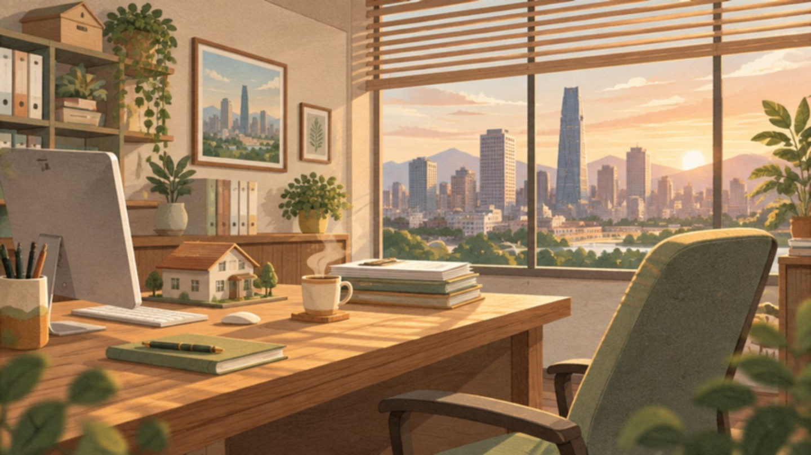
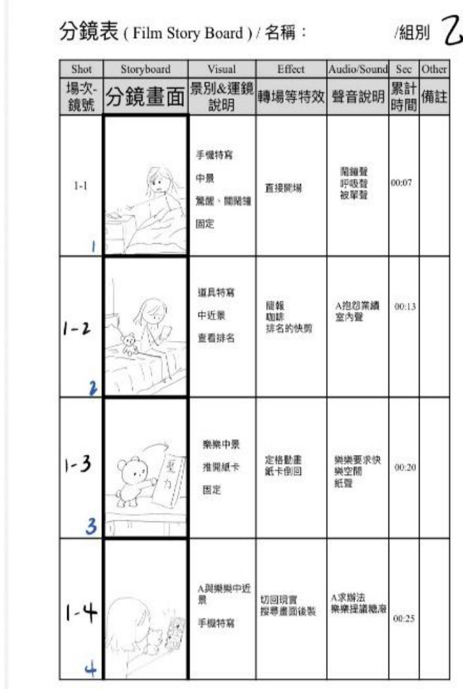
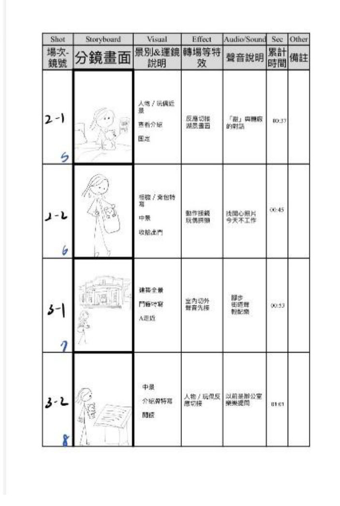
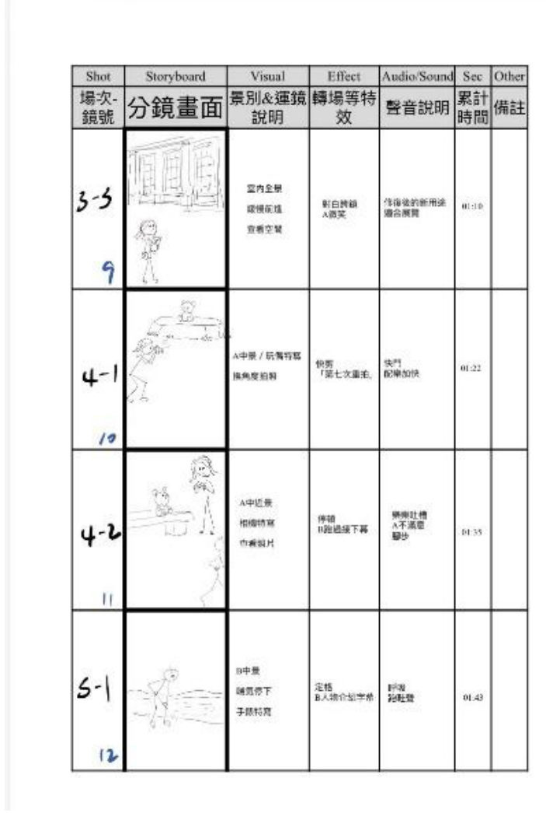
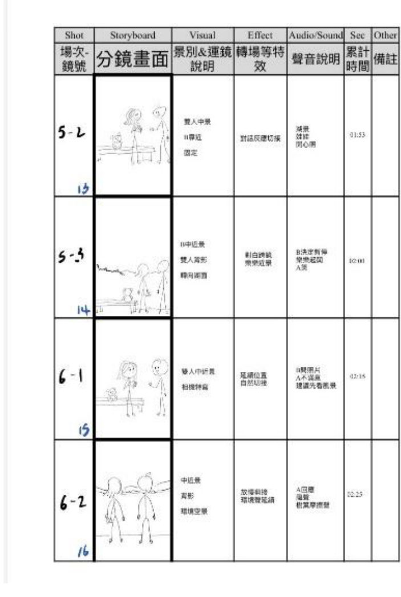
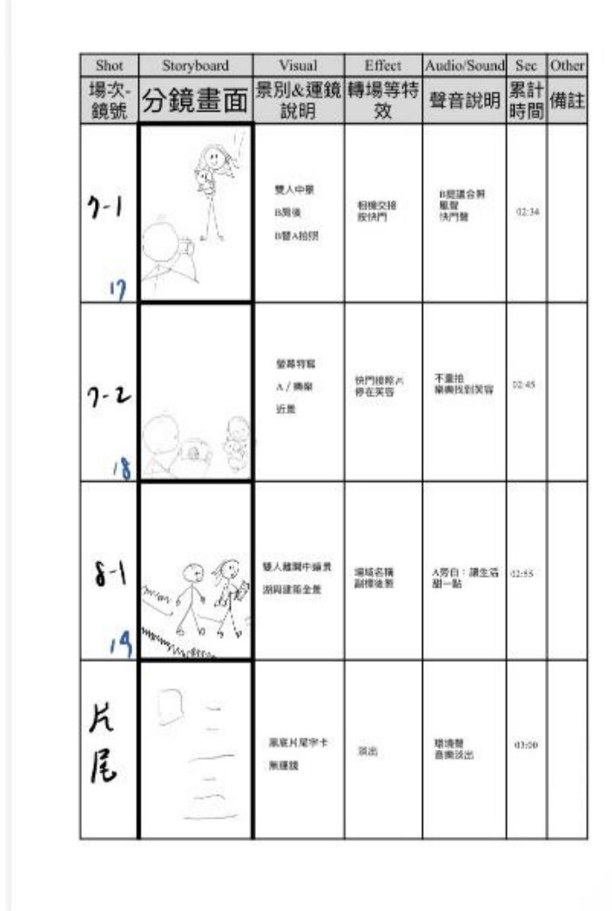

一、故事大綱
年輕女業務員 A 每天被業績追著跑，焦慮到失眠。她心裡的情緒玩偶「樂樂」想找回甜甜的快樂，帶著她前往帝國製糖廠臺中營業所。
A 習慣拿起相機想拍出完美照片，卻陷入像上班一樣反覆重拍的緊繃。在湖畔，她遇見連慢跑都在算圈數的工程師 B，兩人才發現彼此連放鬆都像在扛業績。
當他們放下對完美的執念，B 隨手按下一張 A 頭髮被風吹亂、樂樂也歪在一邊卻笑得很開心的合照。不完美的快門，定格了最真實的笑容。

二、角色介紹
A
年輕女業務員
被業績排名追著跑，連拍照都要求完美。
樂樂
快樂情緒玩偶
A 心裡的快樂小精靈，用定格動畫呈現。
B
科技廠工程師
連慢跑都在算圈數，最後幫 A 按下快門。
三、核心訊息
現代人「連放鬆都要打卡、追求完美」。我們用相機從「反覆重拍」到「拍下一張不完美合照」的轉變，讓觀眾感受到：走進帝國製糖廠不需要帶著目的，只要坐下來吹吹風、看看湖面，就能找到真實的「甜味與放鬆」。
這裡不再製糖，卻留下了讓生活甜一點的地方。

四、分鏡表
全片共 19 個鏡頭，約 3 分鐘：從鬧鐘驚醒、查看業績排名，到走進糖廠、湖畔相遇，最後以不完美的合照收尾。




